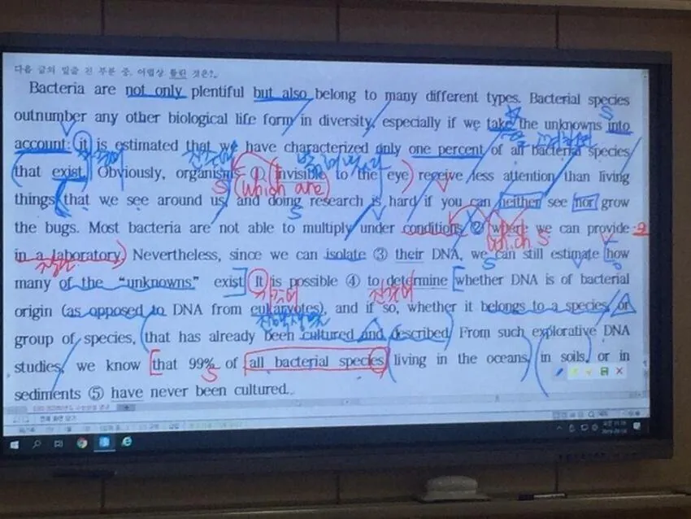

50분 내내 주구장창 문법만 배움
그리고 그렇게나 배웠는데 하나도 기억 안 남…

50분 내내 주구장창 문법만 배움
그리고 그렇게나 배웠는데 하나도 기억 안 남…
목적은 독해 문법은 도구가 본질인데 본말 전도된거지
우리나라가 그렇게 좋아하는 주입식 교육으로 독해력을 주입시키는 건 불가능한데
문법은 가능하니까 억지로 쑤실뿐
다들 몇년생이냐 미안한데
분명 중고등학생때 영어성적은 나쁘지 않았는데 외국가면 영어가 안나옴...
읽기나 문법은 일상회화 가능자를 대상으로 학습시키는게 순서
갠적으로는 천일문 정도로 문법 가르치는게 딱 적당했다고 본다
회화가 잘 안되는 우리나라 영어 교육의 한계이긴한데 회화만큼 문법 공부도 중요한거 맞음
고등학교 친구 중에 abc 겨우 할줄 아는 애가 아버지 등쌀에 미국으로 건너갔는데, 나중에 보니 영어는 기가막히게 자연스럽게 하더라. 근데 읽는건 버벅이더라고. 극단적인 예긴 하지만 문법이 전부가 아닌만큼 회화도 영어의 전부가 아님
문법 공부가 쓸모없다는 식의 생각에는 반대임
실생활에서 미적분 쓰지도 않는데 왜 배우냐랑 동급의 논리인 것 같음
공부는 탐구하는 과정에서 뇌를 단련시키는거라
대학수학능력을 기른다는 취지에 비춰보면
영어로 대화할 일보다 영어 자료를 읽을 일이 많늘거라
문법 공부는 매우 필요함
나도 걍 회화 생활영어만 했는데 영국에서 1년 워홀 하면서 한국 오자마자 토익 봤는데 850 뜨더라 ㅋㅋㅋ문법을 알긴 해야됨 걍 감으로 이게 더 자연스럽네 하면 아닌경우들이 꽤많음
공부랑 직업이랑은 전혀다른게 내가 무역업종사자들이랑 얘기해보면 무조건 회화가 우선이라더라 사장도 그쪽으로 우선시함 문법은 걍 자격증 수단일뿐임
난 주구장창 단어만 했는데 수능영어 한 개 틀림
이게 정답 언어는 단어랑 기세임 ㅋㅋ
윤선생이 답임. 윤선생 3년하고 수능
토익 전부 만점
나도 처음에는 문법이나 독해만 주구장창 하는게 무슨 소용인가 했는데,
결국 우리가 봤던 시험은 회화나 영어 능력 시험이 아닌 수학능력시험임
대학에 입학해서 제대로 공부할 수 있는 능력을 갖추었는가를 확인하는 시험이라는거임
그런 의미에서 원서를 읽고 학업을 수행할 수 있는 능력을 확인하기 위해 저런 어려운 문장들로 구성된 글을 제대로 이해할 수 있는가를 테스트 하는건
사실 따지고 보면 대학 수학 능력 시험의 본질에 맞는 출제 방향이라고 생각됨
몇 십 년을 대중들에게 그렇게 욕먹어도 출제 경향이 바뀌지 않는 이유가 있는거임
수능은 문법 두문제 나와서 걍 던졌는데 2등급 나오긴 함
3, 4, 5 형식을 대학생 때 토익 공부하면서 처음배움 ㅋㅋ
문법 다까먹은거 같은데 AB반 인강 다시 들어야 하나
그래도 문장을 쪼개고 분해시켜서 구조와 각 성분의 역할을 아는게 도움되는듯
옛날 영어 공부 했던거 바탕으로 얘기해보자면
학창시절 영어, 외국어는 두 트랙으로 이해하면서 접근해야함
1. 수능 공부식 영어
단언컨데 다른 외국어 공부하듯이 수능 영어 공부하면, 패망의 길임
수능 영어는 단순 지문을 해석하는 능력이 아니라, 추론같은 IQ 테스트 느낌으로 봐야함
그리고 그런 점에서 저런 문법 수업이 의미가 있긴 함
물론 수능 영어 잘 보고, 영어는 어버버하는 회화 병신 만들기도 좋은 수업이기도 하고
2. 실전 회화식 영어
사회 나가서 외국인 친구 만들거나, 외국 여행, 회사에서 비즈니스 할 떄 진짜로 회화하는 법
이건 실제로 접근성 좋은 영어 문학, 그리고 일상 시트콤 미드 등을 활용해서 공부하는게 더 나음
그냥 이렇게 나눠서 이해하는게 속 편해
다만 2번으로 해서, 어린 아이가 자연스럽게 한글 깨닫고, 회화하듯이 공부하면
그래도 영어 3등급은 보장이 됨. Listening에서는 훨씬 강해지고
근데 2등급, 1등급까지 치고 올라가려면 1번식 공부가 필요함
영어로 맨날 클라이언트들이랑 대화하는데도 영어같이 존나 병신같은 언어도 사실 없음.
오만 잡다한 문화가 다 짬뽕이 돼서 그냥 규칙이라는 게 없음.
읽는 방식도 지 좆대로고
전세계 언어중에 안그런 언어가 없음. 영어는 그나마 존나 양반임..
can can? can~
Can or cannot? Can lah~
난 영어는 문법, 독해요소 전부 기억 다 나는데... 수학은 깡그리 포맷됨
문법 잘 하면 회화도 잘 할 가능성 높음
가능이니 Can
2인칭이니 you
조동사가 쓰였으니 동사원형 써야 하니 pick
대명사라 타동사구 사이에 둬야 하니 me up?
이딴 식으로 생각하고 말하면 회화 좆망함
문법 잘 하고 회화도 잘 함 ㅇㅇ
이과들 한국어 문법 아는거 거의 없는데도 말 잘만함 문법이랑 회화랑 아무상관없음
상관있음
문법 하나도 안배운 초딩 저학년도 하는게 회화
주변에 외국살다온애들 영유나온애들 문법 공부한적 있는지 물어봐라
본문이 학창시절 영어공부 문법에 관한 건데 영유 얘기를 왜 함?
니가 문법 잘하면 회화도 잘 할 가능성 높다며
너는 그냥 문법도 잘하고 회화도 잘하는거라고
나는 문법이랑 회화는 상관없다는 근거로 해외, 영유 들어준거고
니 댓글 자체가 본문은 언급도 없는데 왜 나한테 물어봄
본문에 대한 내용으로 댓글 다는게 당연한거 아니냐
그럼 본문에 회화 얘기는 있냐?ㅋㅋㅋ
어휴 그래그래 니 말이 다 맞다
수능 영어 문법은 퍼즐 맞추기 같음ㅋㅋㅋ
수능영어 모의고사 항상 만점맞았고 수능때도 다 맞았는데 영어 하루에 별로 투입안함
문법 외울 시간에 지문 읽으면서 5형식 구조 대충대충 파악만 빨리 하면서 넘어가고 국어처럼 독해력과 추론능력 자체를 키워야 고득점이 됨
단어도 생각보다 안 중요함 정작 풀면서 중요한 어려운 문제들은 단어나 문법을 다 안다고 해서 풀 수 있는게 아니라서...국어 비문학 우리말이라고 해서 다 이해가는거 아니잖아